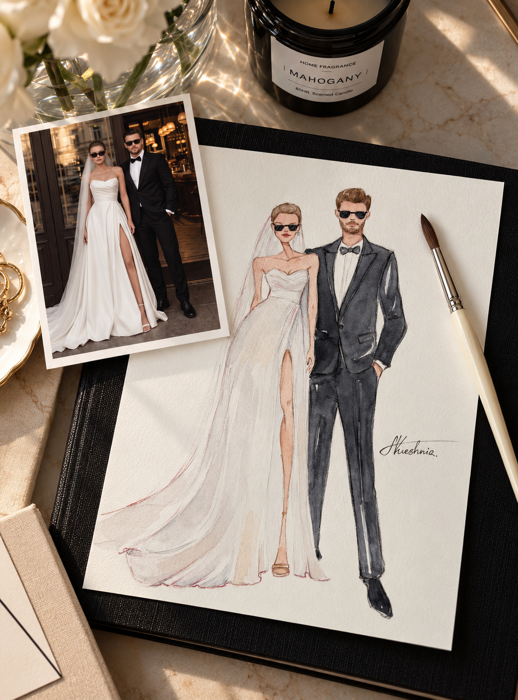
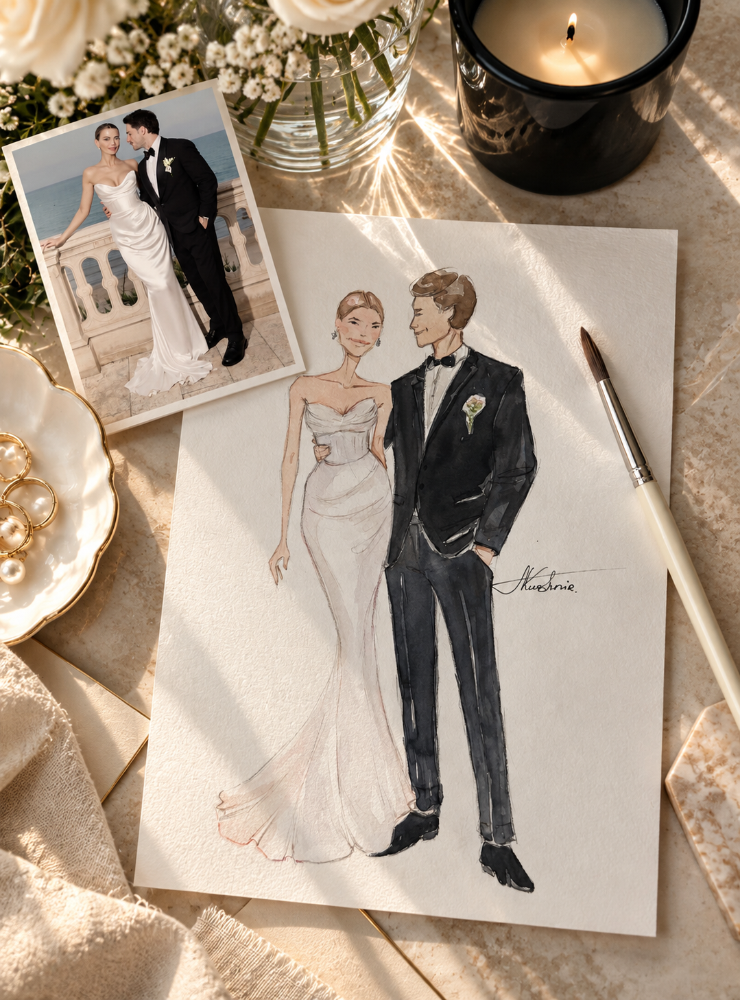
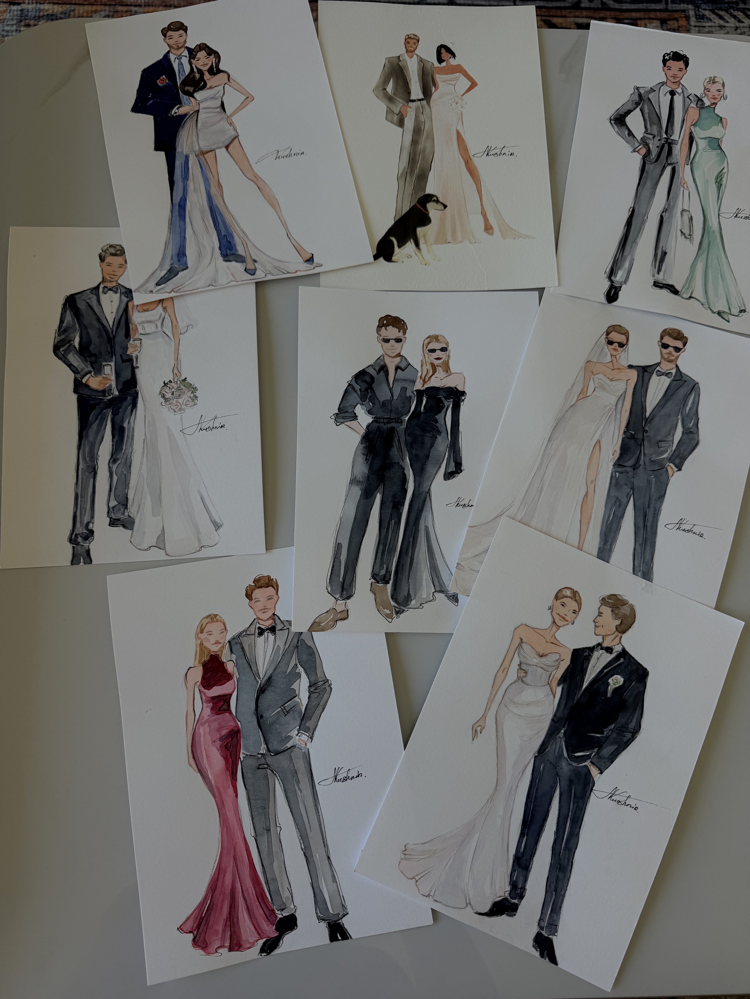
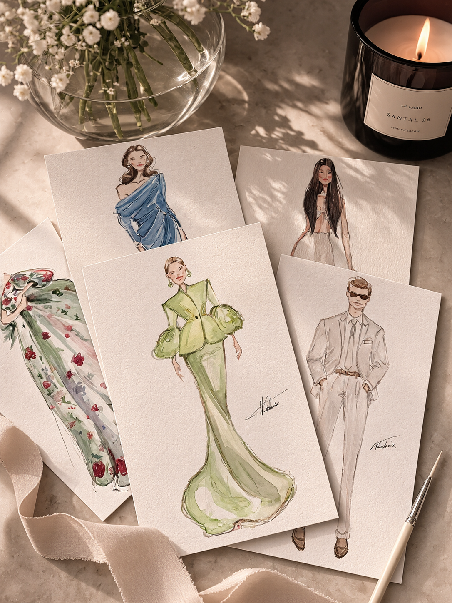
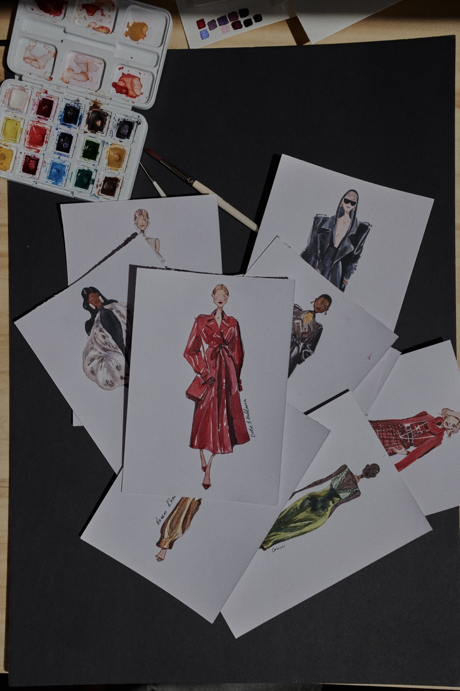
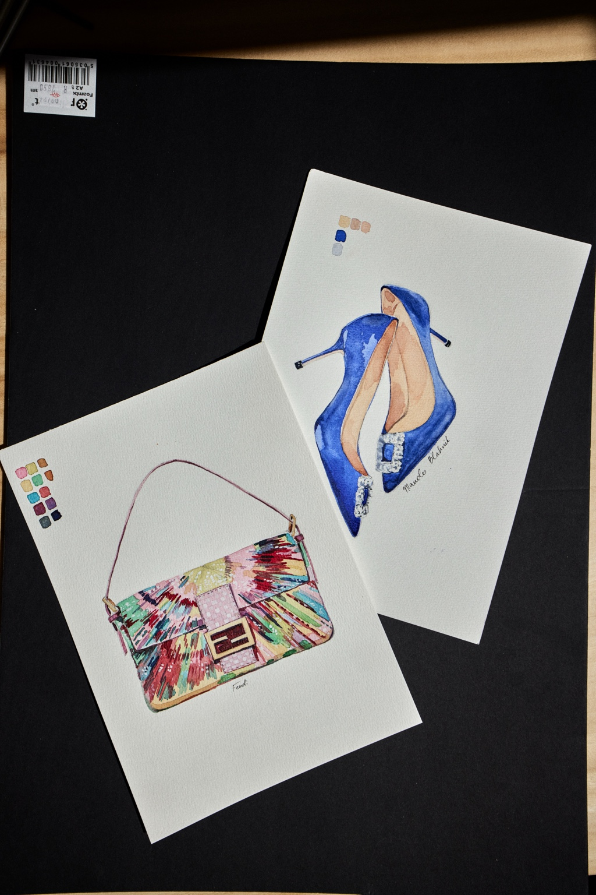
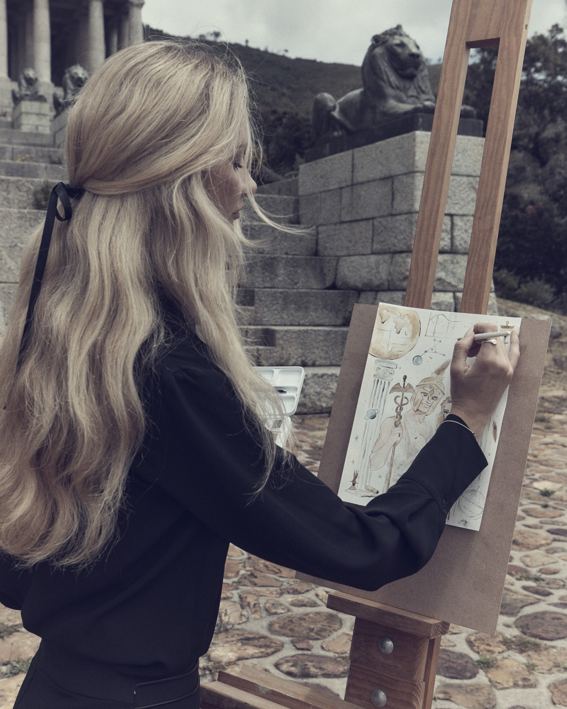

Before the celebration
We confirm the date, location and event details. I arrive 20–30 minutes before the booked start time to set up.
Cape Town · South Africa · Available worldwide
Illustrated by Nata
Fashion-inspired watercolour portraits, created live for your guests.
An experience for your guests
As the celebration unfolds, I sketch guests in a loose, fashion-led watercolour style. Each original portrait is made by hand and becomes a personal keepsake of the day.
How it works ↘


Selected work
Original artwork and studio photographs by Nataliia Kushnir.





Bespoke illustration
Beyond live events, I take on a limited number of personal commissions: a favourite look, a meaningful portrait or a moment you want to hold on to.
Ask about a commission ↗ THE ARTIST · CAPE TOWN
THE ARTIST · CAPE TOWNMeet the artist
Nataliia Kushnir
I’m a fashion illustrator drawn to the way people move, dress and express themselves. For weddings and events, I bring that eye to the room — noticing a silhouette, a gesture, a detail — and translate it into a hand-painted portrait while the celebration is still happening.
Illustrated by Nata
Follow the latest work ↗The details
We confirm the date, location and event details. I arrive 20–30 minutes before the booked start time to set up.
I sketch guests throughout the event. Setup time is separate and does not reduce the paid illustration hours.
Guests leave with their own original watercolour portrait — a small artwork made just for them.
Cape Town · South Africa · Worldwide